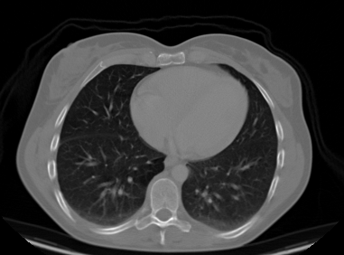
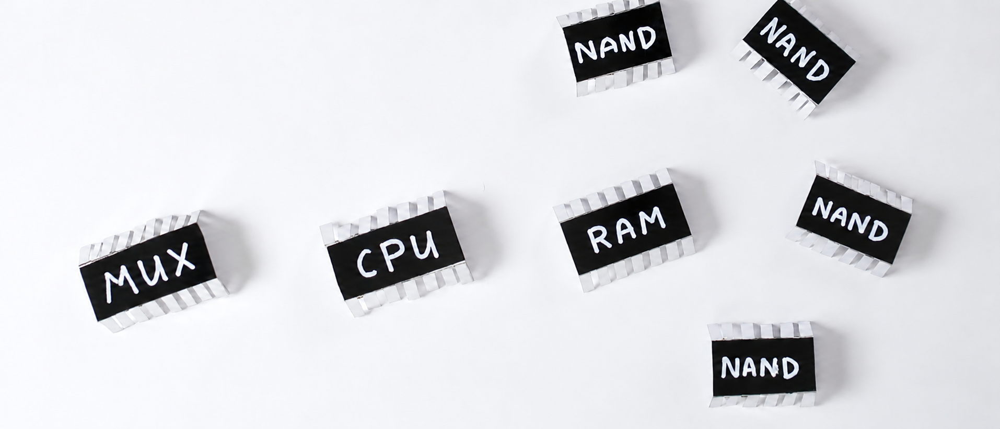
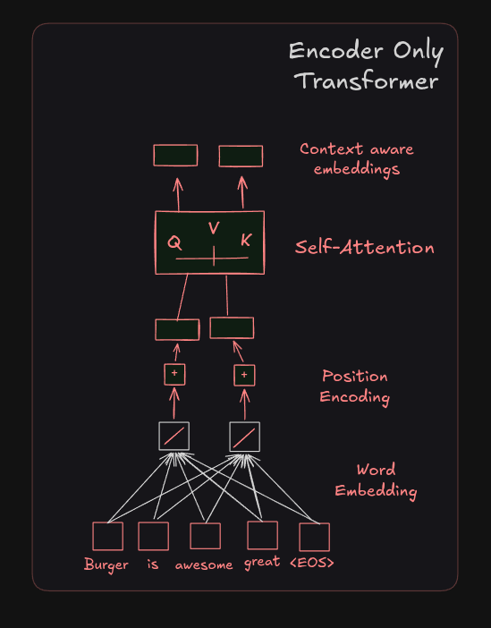
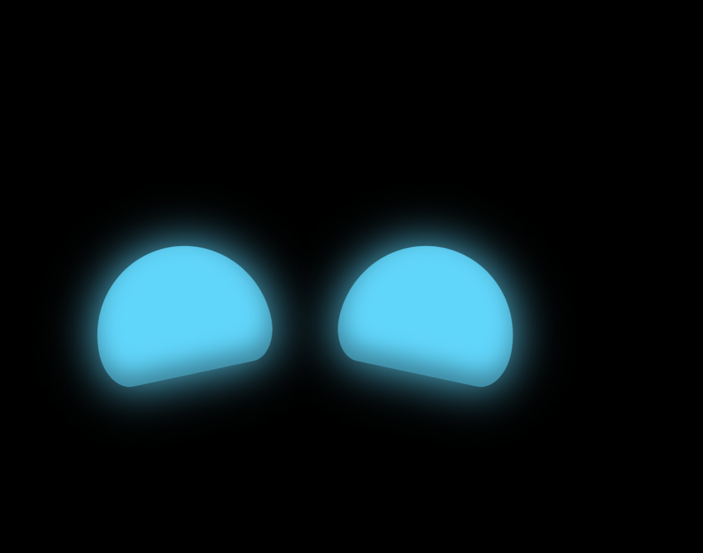
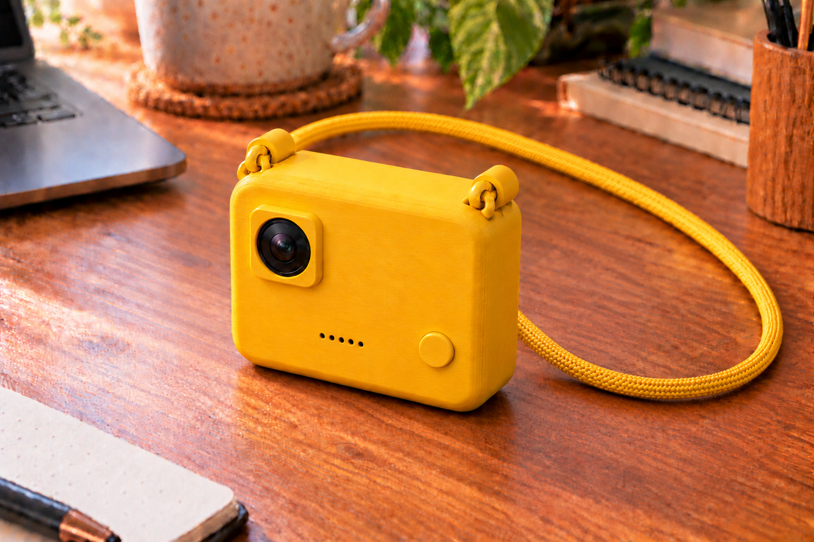
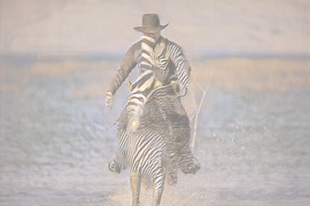
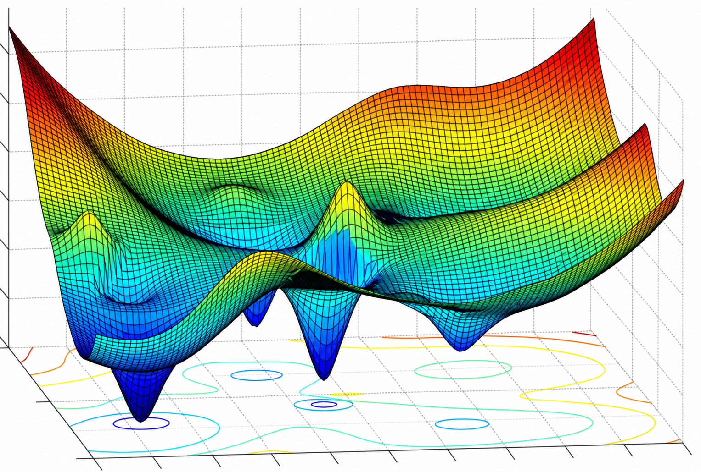

Developed ML models in PyTorch to detect lung cancer and brain tumors with >70% accuracy. Won 1st Prize in Zambia’s National Science Fair (Robotics & AI).
View on GitHub ↗
Building a simple computer from scratch using only NAND gates, and implementing a simple assembly language and CPU architecture. The build and hardware descriptive language used is based on the book "The Elements of Computing Systems from first principles" by Noam Nisan and Shimon Schocken. The goal is to understand how computers work at the most fundamental level. And eventually be able to build a RISC-V computer from scratch and a tiny TPU.
View on GitHub ↗
Built a small language model from scratch on the GPT (decoder-only transformer) architecture. Implemented tokenization, the pretraining loop on raw text corpora, and a post-training phase (SFT + RLHF-style preference tuning) to align the base model to follow instructions.
View on GitHub ↗
I wrote a Python script to automatically skip ads for me. I sometimes struggle to fall asleep, and one thing that helps is listening to music while I’m trying to drift off. The problem is that when I don’t have a premium subscription, ads interrupt the music and wake me up, forcing me to manually skip them. Since that’s especially frustrating when I’m already having trouble sleeping, I built a script to handle it for me so I can stay relaxed and fall asleep without interruptions
View on GitHub ↗Implemented Deep Q-Learning from scratch and trained agents in OpenAI Gym: one learns to drive a car around a simulated track from raw state/pixel input, another learns to play Atari Battle Zone through reward-driven trial and error.
View on GitHub ↗
A Raspberry Pi-powered wearable I built for my CS1 class. Lulu is meant to be worn by vision-impaired people, keeping watch on the environment around them and helping them understand what's going on — including safely crossing streets.
View on GitHub ↗
Implemented the original CycleGAN paper for unpaired image-to-image translation. Optimized for bidirectional conversion.
View on GitHub ↗
Investigating training methods that don't rely on backprop's reverse-mode pass — aiming for algorithms that are less memory-hungry (no need to store activations for a full backward pass) and not sequence-locked, so layers could update without waiting on a global forward/backward sweep.
View on GitHub ↗Practical Electronics for Inventors, Robotics, and World Models.